P32
2 Video Generation
2.1 Pioneering/early works
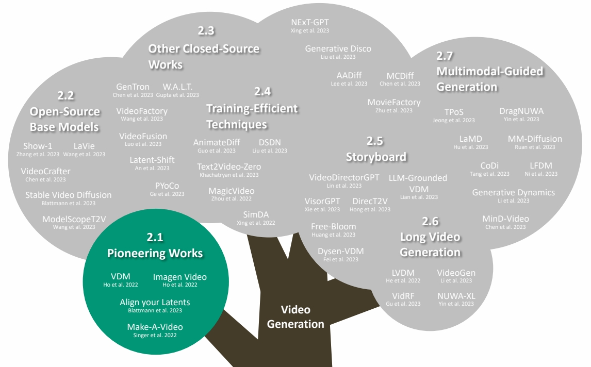
P34
Problem Definition
Text-Guided Video Generation
Text prompt → video
Video from Zhang et al., “Show-1: Marrying Pixel and Latent Diffusion Models for Text-to-Video Generation,” arXiv 2023.
P35
Problem Definition
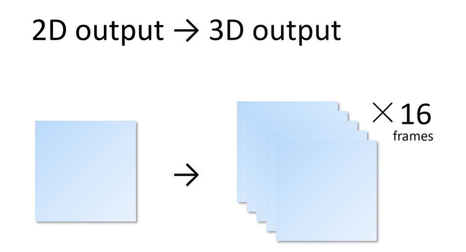
✅ 从 2D 输出变成 3D 输出。
P36
Video Diffusion Models
Recap 3D Conv
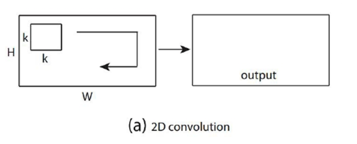 |  |
Du et al., “Learning Spatiotemporal Features with 3D Convolutional Networks,” ICCV 2015.
P37
Video Diffusion Models
Recap (2+1)D Conv
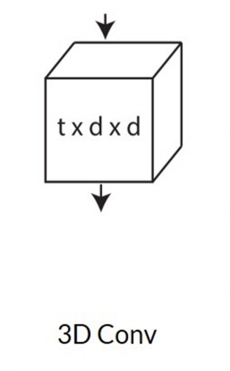 |  |
Du et al., “A Closer Look at Spatiotemporal Convolutions for Action Recognition,” CVPR 2018.
✅ \(t\times d\times d\) 卷积 kenal 数量非常大，可以对 kernel 做分解，先在 spatial 上做卷积，然后在 temporal 上做卷积。
✅ 特点：效果还不错，效率也高。
P38
Video Diffusion Models
Early work on video generation
Ho et al., “Video Diffusion Models,” NeurIPS 2022.
P39
Video Diffusion Models
Early work on video generation
- 3D U-Net factorized over space and time
- Image 2D conv inflated as → space-only 3D conv, i.e., 2 in (2+1)D Conv
- Kernel size: (3×3) → (1×3×3)
- Feature vectors: (height × weight × channel) → (frame × height × width × channel)
- Spatial attention: remain the same
- Insert temporal attention layer: attend across the temporal dimension (spatial axes as batch)
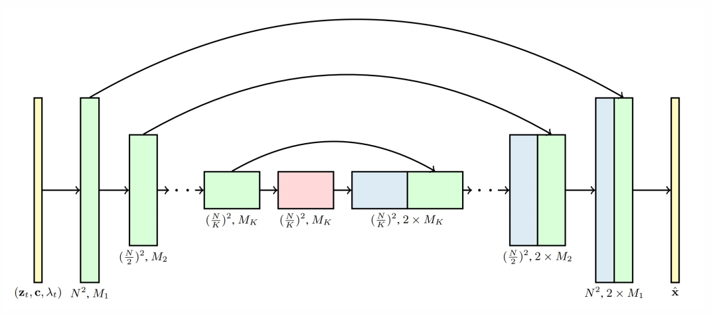
Ho et al., “Video Diffusion Models,” NeurIPS 2022.
✅ 2D U-Net 变为 3D U-Net，需要让其内部的 conv 操作和 attention 操作适配 3D.
✅ (1) 2D conv 适配 3D，实际上只是扩充一个维度变成伪 3D，没有对时序信息做抽象。
✅ (2) attention 操作同样没有考虑时序。
✅ (3) 时序上的抽象体现在 temporal attention layer 上。
❓ temporal layer 是怎之设计的？
❓ 先 spatial 还是 temporal？二者怎拼合？
P40
Make-A-Video
Cascaded generation
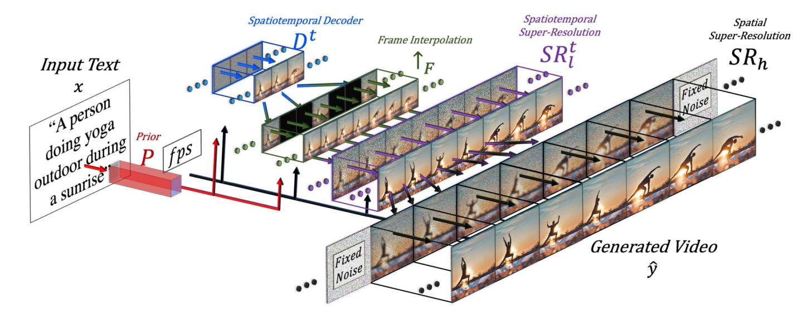
Singer et al., “Make-A-Video: Text-to-Video Generation without Text-Video Data,” arXiv 2022.
✅ 效果更好，框架在当下更主流。
✅ (1) SD：decoder 出关键帧的大概影像。
✅ (2) FI：补上中间帧。
✅ (3) SSR：时空上的超分。
✅ 时序上先生成关键帧再插帧，空间上先生成低质量图像再超分。
✅ 这种时序方法不能做流式输出。
P41
Make-A-Video
Cascaded generation
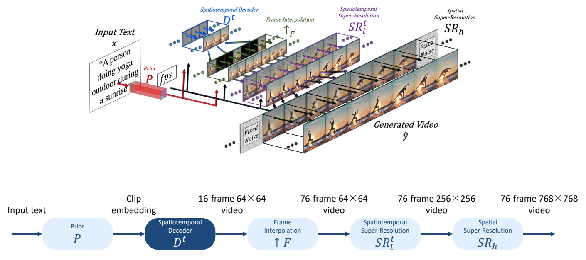
Singer et al., “Make-A-Video: Text-to-Video Generation without Text-Video Data,” arXiv 2022.
❓ 第 3 步时间上的超分为什么没有增加帧数？
P42
Make-A-Video
Cascaded generation
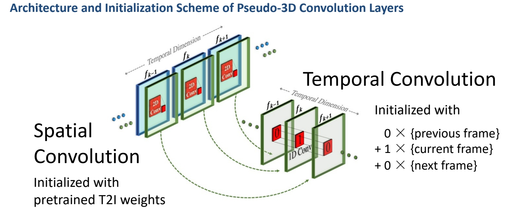
Singer et al., “Make-A-Video: Text-to-Video Generation without Text-Video Data,” arXiv 2022.
✅ 此处的伪 3D 是指 (2＋1)D，它有时序上的抽像，与 VDM 不同。
✅ 空间卷积使用预训练好的图像模型。
P43
Make-A-Video
Cascaded generation
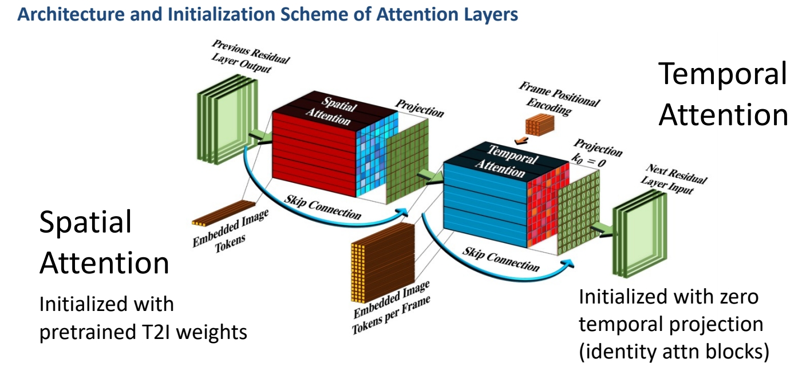
Singer et al., “Make-A-Video: Text-to-Video Generation without Text-Video Data,” arXiv 2022.
✅ attention 操作也是 (2＋1)D．
❓ 卷积层与 diffusion 层怎么结合？
P44
Make-A-Video
Cascaded generation
Training
- 4 main networks (decoder + interpolation + 2 super-res)
- First trained on images alone
- Insert and finetune temporal layers on videos
- Train on WebVid-10M and 10M subset from HD-VILA-100M
✅ 先在图片上训练，再把 temporal layer 加上去。
P45
Datasets
The WebVid-10M Dataset
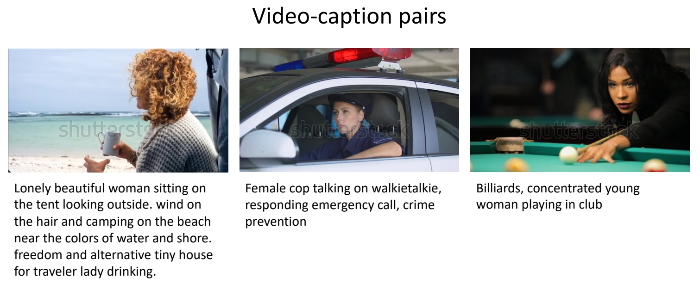
Bain et al., “Frozen in Time: A Joint Video and Image Encoder for End to End Paper,” ICCV 2021.
✅ WebVid 是常用的视频数据集，有高清视频及配对文本。
P46
Evaluation Metrics
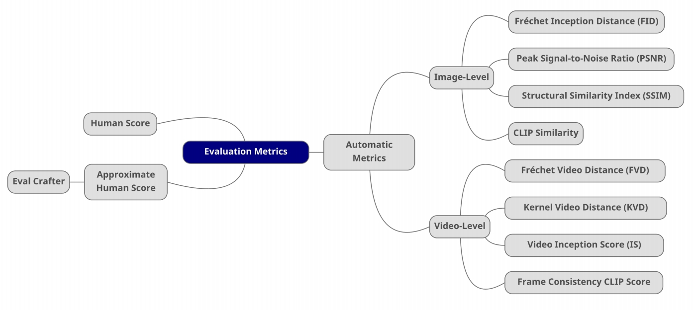
P47
Evaluation Metrics
Quantitative evaluations
Image-level Evaluation Metrics
- Fréchet Inception Distance (FID, ↓): semantic similarity between images
- Peak Signal-to-Noise Ratio (PSNR, ↑): pixel-level similarity between images
- Structural Similarity Index (SSIM, ↓): pixel-level similarity between images
- CLIPSIM (↑): image-text relevance
Video-level Evaluation Metrics
- Fréchet Video Distance (FVD, ↓): semantic similarity & temporal coherence
- Kernel Video Distance (KVD, ↓): video quality (via semantic features and MMD)
- Video Inception Score (IS, ↑): video quality and diversity
- Frame Consistency CLIP Score (↑): frame temporal semantic consistency
P48
Fréchet Inception Distance (FID)
Semantic similarity between images
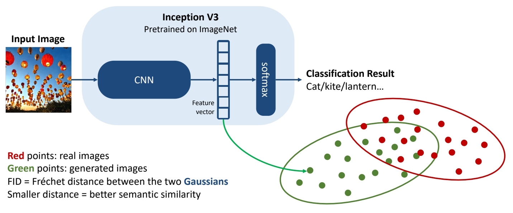
Lantern image generated with Stable Diffusion 2.1.
Heusel et al., “GANs Trained by a Two Time-Scale Update Rule Converge to a Local Nash Equilibrium,” NeurIPS 2017.
Hung-Yi Lee, “Machine Learning 2023 Spring,” National Taiwan University.
✅ FID：评估两个 distribution 的差距有多大。
✅ 由于使用了网络的高层 feature，可以评价 high／evel 的语义相似性。
P49
Peak Signal-to-Noise Ratio (PSNR)
Pixel-level similarity between images
- For two images \(x,y \text{ of shape } M\times N\):
\begin{align*} \mathrm{PSNR} (x,y) = 10 \log_{10}{} \frac{255^2}{\mathrm{MSE} (x,y)} \end{align*}
where
\begin{align*} \mathrm{MSE} (x,y) = \frac{1}{MN} \sum_{i=1}^{M} \sum_{j=1}^{N} (x_{ij}-y_{ij})^2\end{align*}
Horé et al., “Image Quality Metrics: PSNR vs. SSIM,” ICPR 2010.
P50
Structural Similarity Index Measure (SSIM)
Pixel-level similarity between images
-
Model any image distortion as a combination of:
(1) loss of correlation, (2) luminance distortion, (3) contrast distortion -
For two images \(x,y \text{ of shape } M\times N\):
\begin{align*} \mathrm{SSIM} (x,y)=l(x,y)\cdot c(x,y)\cdot s(x,y)\end{align*}
where
\begin{align*} \begin{cases} \text{Lumiannce Comparison Funckon:} l(x,y)=\frac{2\mu _x\mu _y+C_1}{\mu _x^2+\mu _y^2+C_1} \\ \text{Contrast Comparison Funckon:} c(x,y)=\frac{2\sigma _x\sigma _y+C_2}{\sigma _x^2+\sigma _y^2+C_2} \\ \text{Structure Comparison Funckon:} s(x,y)=\frac{\sigma _{xy}+C_3}{\sigma _{x}\sigma _{y}+C_3} \end{cases}\end{align*}
Wang et al., “Image Quality Assessment: from Error Visibility to Structural Similarity,” IEEE Transactions on Image Processing, April 2004.
Horé et al., “Image Quality Metrics: PSNR vs. SSIM,” ICPR 2010.
P51
CLIP Similarity
Image-caption similarity
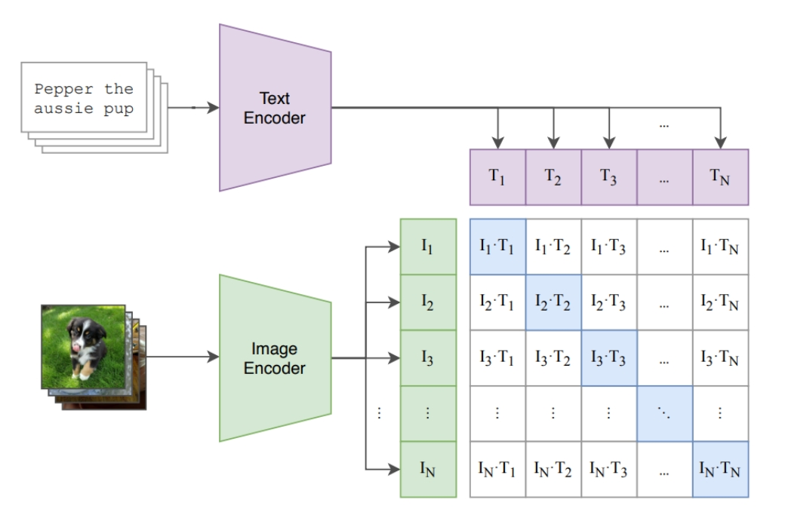
Radford et al., “Learning Transferable Visual Models From Natural Language Supervision,” ICML 2021.
P52
Fréchet Video Distance (FVD)
Semantic similarity and temporal coherence between two videos
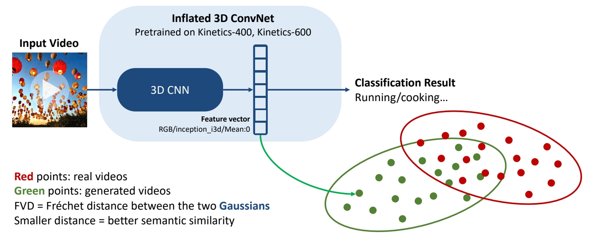
Unterthiner et al., “FVD: A new Metric for Video Generation,” ICLR 2019.
Unterthiner et al., “Towards Accurate Generative Models of Video: A New Metric & Challenges,” arXiv 2018.
P53
Kernel Video Distance
Video quality assessment via semantic features and MMD
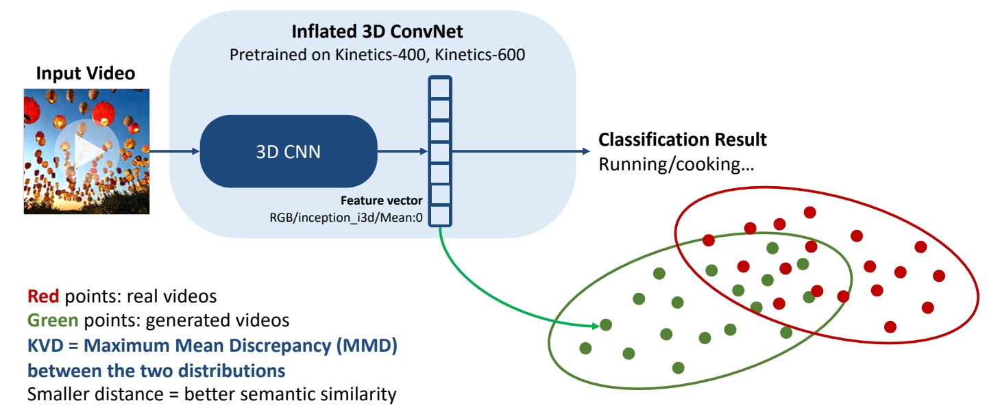
Unterthiner et al., “FVD: A new Metric for Video Generation,” ICLR 2019.
Unterthiner et al., “Towards Accurate Generative Models of Video: A New Metric & Challenges,” arXiv 2018.
P54
Video Inception Score (IS)
Video quality and diversity
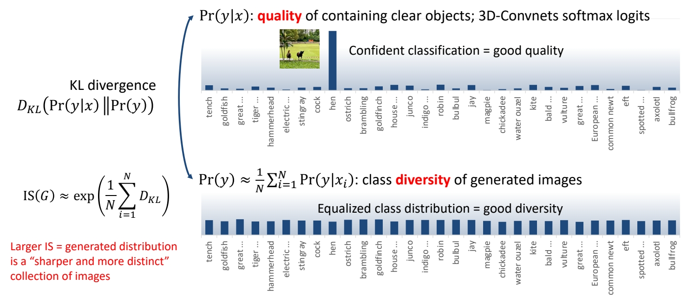
Salimans et al., “Improved Techniques for Training GANs,” NeurIPS 2016.
Barratt et al., “A Note on the Inception Score,” ICML 2018.
Saito et al., “Train Sparsely, Generated Densely: Memory-Efficient Unsupervised Training of High-Resolution Temporal GAN,” IJCV 2020.
✅ 多样性，在不给定 condition 的情况生成的分布的多样性。
✅ 质量：在给 condition 的条件下应生成特定的类别。
P55
Frame Consistence CLIP scores
Frame temporal semantic consistency
- Compute CLIP image embeddings for all frames
- Report average cosine similarity between all pairs of frames
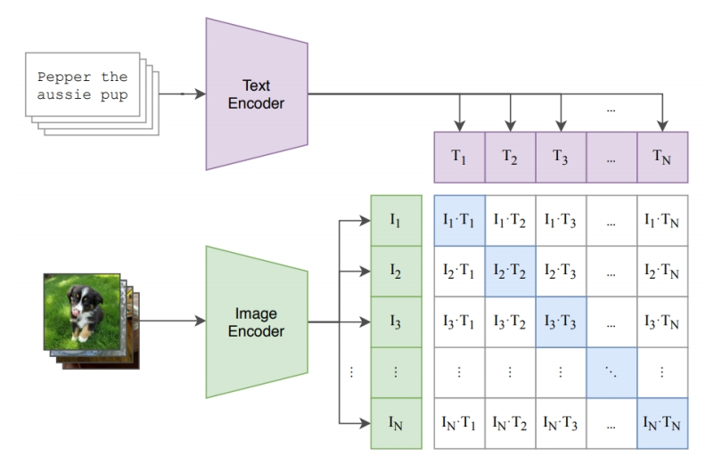
Radford et al., “Learning Transferable Visual Models From Natural Language Supervision,” ICML 2021.
P57
Evaluation Metrics
Hybrid evaluation
EvalCrafter
- Creates a balanced prompt list for evaluation
- Multi-criteria decision analysis on 18 metrics: visual quality, content quality…
- Regress the coefficients of all metrics to generate an overall score aligned with user opinions
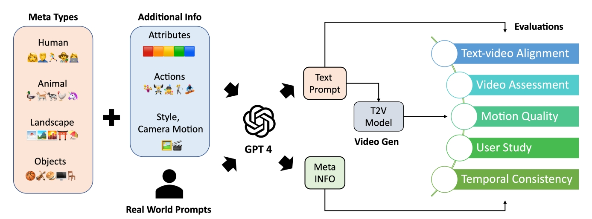
Liu et al., “EvalCrafter: Benchmarking and Evaluating Large Video Generation Models,” arXiv 2023.
P58
Make-A-Video
Cascaded generation

Singer et al., “Make-A-Video: Text-to-Video Generation without Text-Video Data,” arXiv 2022.
P59
Make-A-Video
Cascaded generation
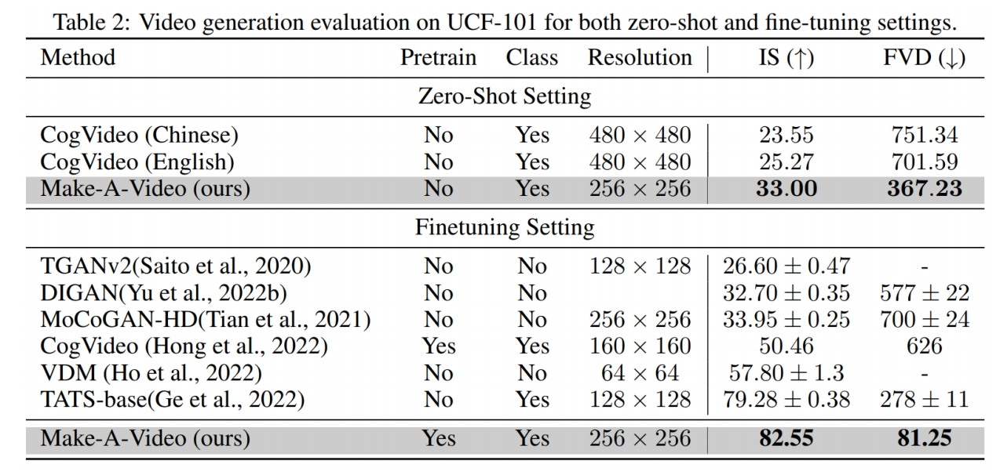
Singer et al., “Make-A-Video: Text-to-Video Generation without Text-Video Data,” arXiv 2022.
✅ 早期都在 UCF 数据上比较，但 UCF 本身质量比较低，新的生成方法生成的质量更高，因此不常用 UCF 了。
P60
Make-A-Video
Cascaded generation

Singer et al., “Make-A-Video: Text-to-Video Generation without Text-Video Data,” arXiv 2022.
P62
Make-A-Video
Cascaded generation
From static to magic
Add motion to a single image or fill-in the in-betw
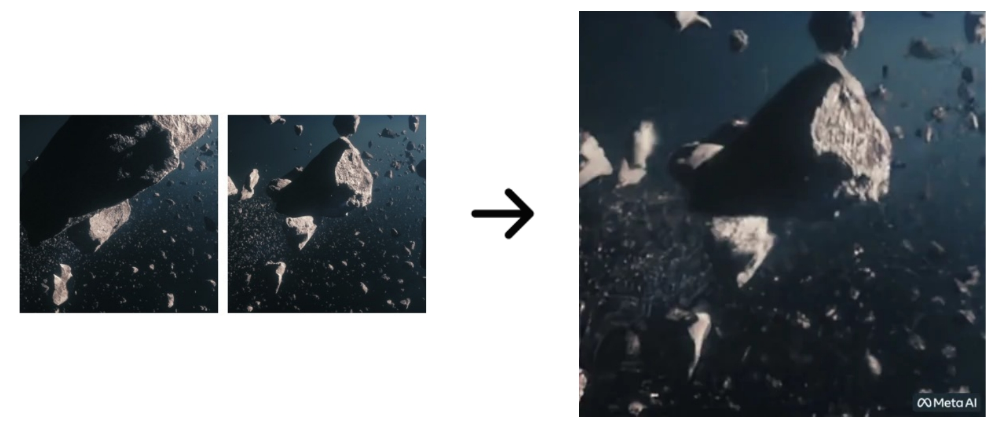
Singer et al., “Make-A-Video: Text-to-Video Generation without Text-Video Data,” arXiv 2022.
P63
Imagen & Imagen Video
Leverage pretrained T2I models for video generation; Cascaded generation
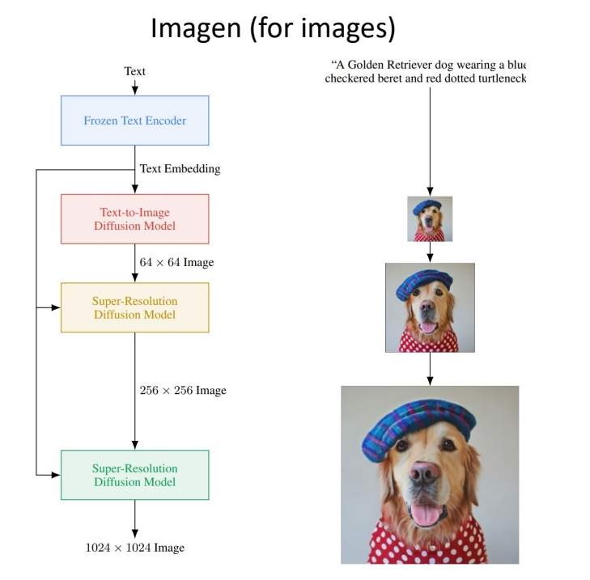 | 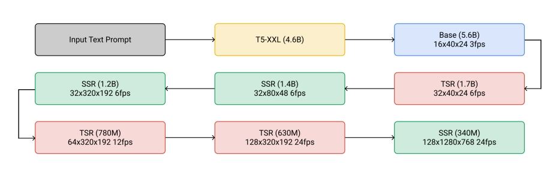 |
Imagen: Saharia et al., “Photorealistic Text-to-Image Diffusion Models with Deep Language Understanding,” arXiv 2022.
Imagen Video: Ho et al., “Imagen Video: High Definition Video Generation with Diffusion Models,” arXiv 2022.
✅ 先在 image 上做 cascade 生成
✅ 视频是在图像上增加时间维度的超分
✅ 每次的超分都是独立的 diffusion model?
❓ temporal 超分具体是怎么做的？
P64
Align your Latents
Leverage pretrained T2I models for video generation; Cascaded generation
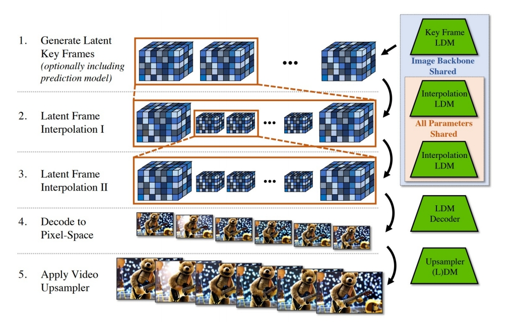
Blattmann et al., “Align your Latents: High-Resolution Video Synthesis with Latent Diffusion Models,” CVPR 2023.
✅ 在 latent space 工作，因此 “生成关键帧 + 插帧 + 超分” 之后要 Decoder.
P65
Align your Latents
Leverage pretrained T2I models for video generation
Inserting Temporal Layers
- Latent space diffusion model: insert temporal convolutional & 3D attention layers
- Decoder: add 3D convolutional layers
- Upsampler diffusion model: add 3D convolution layers
✅ 所有工作的基本思路：(1) 先从小的生成开始 (2) 充分利用 T2I．
本文出自CaterpillarStudyGroup，转载请注明出处。
https://caterpillarstudygroup.github.io/ImportantArticles/